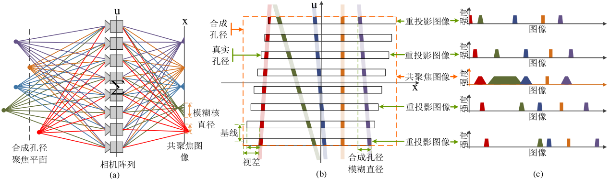
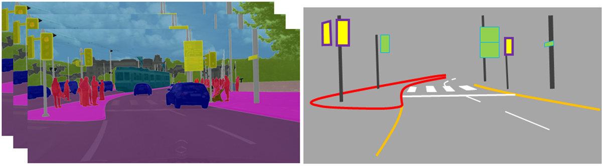
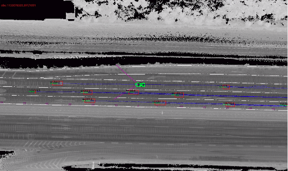

Senior Research and Development Engineer
Horizon-Robotics Inc
yiiwood@gmail.com
+86 18500979061
Director, Mapping Department, 2019-Now
Horizon-Robotics, Beijing, China
Tech Lead, Mapping Team, 2017-2019
Horizon-Robotics, Beijing, China
Senior Research and Development Engineer, 2016-2017
Horizon-Robotics, Beijing, China
Collaborated with Dalong Du, Yinan Yu, Chang Huang
Senior Research and Development Engineer, 2014-2016
Institue of Deep Learning, Baidu Inc, Beijing, China
Autonomous Driving Unit, Baidu Inc, Beijing, China
Collaborated with Yifeng Pan, Kai Ni, Chang Huang
Algorithm Engineer Intern, 2013
Alibaba Group, Hangzhou, China
Northwestern Polytechnical University (NPU), 2011-2013
Master of Science, Pattern Recogniton and Machine Learning
Northwestern Polytechnical University (NPU), 2007-2011
Bachelor of Science, Computer Science
北斗系统在自动驾驶动态高精地图领域的技术与行业应用
Link
Yilin Huang, Degang Yang, Shuai Yang, Guoxing Che
中国卫星导航与位置服务大会, 2019
Fully Convolutional Networks Vehicle Detection in Point Cloud
Degang Yang, Xiaohui Li, Yifeng Pan
The earliest practice, 2016
Fully Convolutional Networks Semantic Segmentation for Autonomous Driving
Degang Yang, Yifeng Pan, Chang huang
The earliest practice, 2015
Depth Estimation from Light Field Analysis Based Multiple Cues Fusion
PDF
Degang Yang, Zhaolin Xiao, Heng Yang and Qing Wang
Chinese Journal of Computers, 2015

Research on Depth Estimation by Light Field Multiple Cues Fusion
Degang Yang and Qing Wang
Master Thesis, 2014
Camera Array, Light Field Analysis, Multiple Depth Cues Fusion, Depth Estimation, Structured Inference
Location Recognition based on Landmark Images
Degang Yang and Qing Wang
Bachelor Thesis, 2011
Location Recognition, Image Retrieval, Image Feature, Sparse Coding, Spatial Pyramid, Geometry Verification
高精语义定位系统
Degang Yang
专利, 2017
Localization from semantic entity matching
实时动态高精语义建图系统
Degang Yang
专利, 2017
Automatic semantic mapping for autonomous driving
位姿信息估计方法、装置和可移动设备
Degang Yang
专利, CN106780608A, 2016
Deep Learning method for odometry and mapping
用于机器的人机交互学习方法及机器
Degang Yang, Jianwei Niu, Dalong Du and Lixin Cao
专利, CN106125911A, 2016
Learning based human-machine intercation
StereoDSO
Jiatian WU, Degang YANG, Qinrui YAN, Shixin LI
Code
Online Onboard Automatic Recognitive Mapping

Deep Semantic Parsing/Segmentation
Detect and Track Object(Marking + Lane + Sign)
Online Reconstruct and Parameterization Object
Online Localization based on Structural HDMap
Multi-Drive Multi-Measurement Optimization
HDMap: Lidar/Camera
Extract Feature for Mapping(PoseGraph/BA)
Automatic Extract HDMap Elements
Localization: Multi-Sensor Fusion
Model Sensor Measurement and Confidence
Relocalization based on Lidar/Camera
Local Odometry and Global Localization Fusion
Face-Recognition: Deep CNN with Metric Loss
LFW上精度达到98.5%，模型3MB
Plate-Number-Recognition: CNN + LSTM + CTC
自有测试集序列精度97%，模型1MB
Deep Quantization: Quantization for Training and Inference
1bit, 2bit, 8bit Training and Inference
Perception: Lidar and Multi-Sensor

Traditional Algorithm and Deep Learning Detection
Multi-Channel Feature Tracking
Object-Track Assosiation and Fusion
HDMap Automation
交通标志准确率94.46%、召回率93.31%，路面标志准确率91.89% 召回率90.60%
Automatic Reconstruct Elements use Lidar and Camera
Fully CNN for Semantic Parsing
Multi-Scale Net, Multi-Task Net(Depth)
Integrate Flow for Video Semantic Parsing
DNN Point Cloud Classification
Recommendation use Restricted Boltzmann Machine
Topic Model for Document Tagging
Navigate On Autopilot
L3, Journey ASIC
NOA based on Camera and Journey Chip
NaviNet: Semantic Mapping System
Camera + IMU + Chassis + GNSS, Journey ASIC
Build and Update HDMap based on Journey Chip
NaviNet Pro: Semantic Point Mapping System
Monocular + IMU + Chassis + GNSS, FPGA
Build and Update HDMap based on Monocular Camera
AutoParking
ChuangXinGang, Shanghai, 2017
Horizon ADv1.0
Low Speed Autonomous Driving on Urban Area, Tianjin, 2017
Baidu ADv1.0
2015 Five Circles demo, Beijing, 2015
Automatic Fusion Mapping System
Lidar + Camera + IMU + GNSS, Offline Extract Landmarks, Beijing, 2014
Edited by Degang Yang, 2017. Thanks to Bootstrap and Masonry.